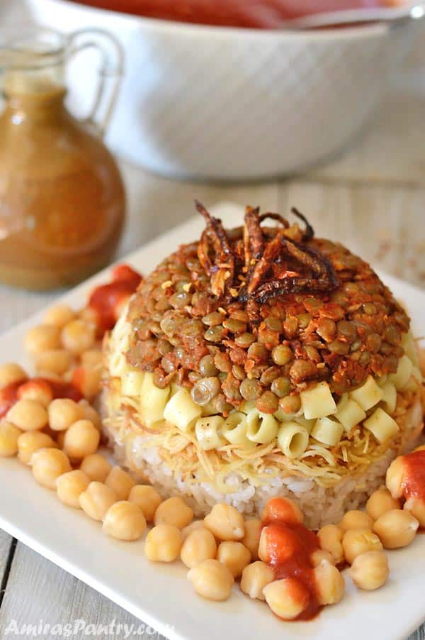

Main Menu
Koshari (The National Dish of Egypt)

Koshary, koshari or kushari is one of the traditional Egyptian food. This dish is considered the national dish of Egypt and a very popular street food. Egyptian koshari recipe is one of the easy Egyptian recipes.
Ingredients for 1 Person
- 3 cups water
- 1 cup red lentils
- 1 roma tomato, quartered
- 1 carrot, quartered
- 1 small onion, quartered
- 4 cloves garlic, quartered
- ¼ cube chicken bouillon (such as Maggi®)
- 1 cup water
- 2 teaspoons ground cumin
- ½ teaspoon sea salt
- ½ teaspoon cracked black pepper
- ¼ teaspoon ground coriander
Preparation
- Place 3 cups water, lentils, tomato, carrot, onion, garlic, and chicken bouillon in a stockpot over medium heat; cook until vegetables and lentils are softened, 20 to 25 minutes. Remove from heat and cool to lukewarm.
- Blend vegetable and lentil mixture with an immersion blender until smooth. Stir 1 cup water, cumin, sea salt, pepper, and coriander into soup; heat over medium heat until warmed.
Main Menu